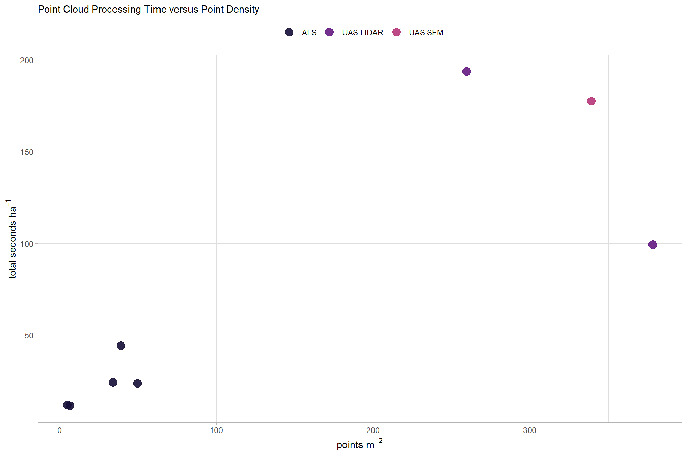

Section 7 Point Cloud Processing Results
7.1 Processing Time
let’s look into the processing time comparison across data sets
the cloud2trees::cloud2trees() program automatically tracks processing time for all sections and stores the tracking data in the “point_cloud_processing_delivery” directory in a file called “processed_tracking_data.csv”
dir_temp <- "../data"
# what processing data?
df_temp <-
list.files(
dir_temp
, pattern = "processed_tracking_data.csv"
, recursive = T
) %>%
dplyr::tibble() %>%
setNames("fpath") %>%
dplyr::mutate(
data_desc = stringr::word(fpath, 2, sep = "/") %>%
stringr::str_remove_all("_processing") %>%
stringr::str_replace_all("_"," ") %>%
stringr::str_squish() %>%
toupper()
, data_type = data_desc %>%
stringr::str_remove_all("[0-9]") %>%
stringr::str_squish()
, study_site = stringr::word(fpath, sep = "/")
, fpath = file.path(dir_temp, fpath)
, fdir = dirname(fpath)
)
# read in processing data
df_temp <- 1:nrow(df_temp) %>%
purrr::map(\(x)
readr::read_csv(
df_temp$fpath[x]
, show_col_types = F
, progress = F
) %>%
dplyr::mutate(
study_site = df_temp$study_site[x]
, data_desc = df_temp$data_desc[x]
)
) %>%
dplyr::bind_rows() %>%
dplyr::inner_join(df_temp, by = dplyr::join_by(study_site,data_desc))
# add in study bounds
study_sites_processing_sf <-
study_sites_sf %>%
dplyr::select(study_site, study_site_lab) %>%
dplyr::inner_join(
df_temp
, by = "study_site"
, relationship = "one-to-many"
)let’s relativize and proportionalize the tracking data
# aggregate the total processing time
study_sites_processing_sf <-
study_sites_processing_sf %>%
dplyr::mutate(
timer_total_time_mins = timer_cloud2raster_mins + timer_raster2trees_mins +
timer_trees_dbh_mins + timer_trees_cbh_mins + timer_trees_type_mins +
timer_trees_hmd_mins + timer_trees_biomass_mins + timer_write_data_mins
, timer_tree_extraction_mins = timer_cloud2raster_mins + timer_raster2trees_mins
, las_area_ha = (las_area_m2/10000)
, points_m2 = number_of_points/las_area_m2
# relative
, dplyr::across(
.cols = tidyselect::starts_with("timer_") & tidyselect::ends_with("_mins")
, .fns = ~ (.x*60)/las_area_ha # sec/ha
# , .fns = ~ .x/las_area_ha # min/ha
, .names = "{.col}_secperha"
# , .names = "{.col}_minperha"
)
# proportion
, dplyr::across(
.cols = c(timer_tree_extraction_mins,
timer_trees_dbh_mins, timer_trees_cbh_mins, timer_trees_type_mins,
timer_trees_hmd_mins, timer_trees_biomass_mins, timer_write_data_mins)
, .fns = ~ .x/timer_total_time_mins
, .names = "{.col}_pct"
)
)
study_sites_processing_sf %>% dplyr::glimpse()## Rows: 8
## Columns: 80
## $ study_site <chr> "FortStewart", "FortStewart", "N…
## $ study_site_lab <chr> "Fort Stewart (GA)", "Fort Stewa…
## $ number_of_points <dbl> 43073560, 340216525, 80299066, 7…
## $ las_area_m2 <dbl> 8999820.0, 6859980.4, 2064120.9,…
## $ timer_cloud2raster_mins <dbl> 8.722992, 128.585765, 22.147697,…
## $ timer_raster2trees_mins <dbl> 10.01676441, 5.58708338, 1.80076…
## $ timer_trees_competition_mins <dbl> 1.446803e-05, 1.419783e-05, 1.50…
## $ timer_treels_stem_dbh_mins <dbl> 6.755193e-08, 6.755193e-08, 6.75…
## $ timer_trees_dbh_mins <dbl> 8.720106, 11.735575, 5.896145, 7…
## $ timer_trees_cbh_mins <dbl> 129.23120, 109.18386, 115.54459,…
## $ timer_trees_type_mins <dbl> 0.31335723, 0.18822260, 0.101875…
## $ timer_trees_hmd_mins <dbl> 12.984603, 12.046923, 4.840216, …
## $ timer_trees_biomass_mins <dbl> 7.52738049, 3.10699495, 1.064633…
## $ timer_write_data_mins <dbl> 3.05878218, 1.16428173, 0.790324…
## $ timer_total_time_mins <dbl> 180.57519, 271.59871, 152.18625,…
## $ sttng_input_las_dir <chr> "../data/fortstewart/als_2018_la…
## $ sttng_accuracy_level <dbl> 2, 2, 2, 2, 2, 2, 2, 2
## $ sttng_max_ctg_pts <dbl> 7e+07, 7e+07, 7e+07, 7e+07, 7e+0…
## $ sttng_max_area_m2 <dbl> 9e+07, 9e+07, 9e+07, 9e+07, 9e+0…
## $ sttng_dtm_res_m <dbl> 1, 1, 1, 1, 1, 1, 1, 1
## $ sttng_chm_res_m <dbl> 0.30, 0.25, 0.25, 0.25, 0.25, 0.…
## $ sttng_min_height <dbl> 2, 2, 2, 2, 2, 2, 2, 2
## $ sttng_max_height <dbl> 70, 70, 70, 70, 70, 70, 70, 70
## $ sttng_ws <chr> "function (x) { y <- dplyr::c…
## $ sttng_estimate_tree_dbh <lgl> TRUE, TRUE, TRUE, TRUE, TRUE, TR…
## $ sttng_max_dbh <dbl> 2, 2, 2, 2, 2, 2, 2, 2
## $ sttng_dbh_model <chr> "lin", "lin", "lin", "lin", "lin…
## $ sttng_estimate_dbh_from_cloud <lgl> FALSE, FALSE, FALSE, FALSE, FALS…
## $ sttng_estimate_tree_competition <lgl> FALSE, FALSE, FALSE, FALSE, FALS…
## $ sttng_competition_buffer_m <dbl> 5, 5, 5, 5, 5, 5, 5, 5
## $ sttng_competition_max_search_dist_m <dbl> 10, 10, 10, 10, 10, 10, 10, 10
## $ sttng_estimate_tree_type <lgl> TRUE, TRUE, TRUE, TRUE, TRUE, TR…
## $ sttng_type_max_search_dist_m <dbl> 1000, 1000, 1000, 1000, 1000, 10…
## $ sttng_estimate_tree_hmd <lgl> TRUE, TRUE, TRUE, TRUE, TRUE, TR…
## $ sttng_hmd_tree_sample_n <dbl> 20000, 20000, 20000, 20000, 2000…
## $ sttng_hmd_tree_sample_prop <dbl> 0.5, 0.5, 0.5, 0.5, 0.5, 0.5, 0.…
## $ sttng_hmd_estimate_missing_hmd <lgl> TRUE, TRUE, TRUE, TRUE, TRUE, TR…
## $ sttng_estimate_biomass_method <chr> "landfire,cruz", "landfire,cruz"…
## $ sttng_biomass_max_crown_kg_per_m3 <dbl> 2, 2, 2, 2, 2, 2, 2, 2
## $ sttng_estimate_tree_cbh <lgl> TRUE, TRUE, TRUE, TRUE, TRUE, TR…
## $ sttng_cbh_tree_sample_n <dbl> 20000, 20000, 20000, 20000, 2000…
## $ sttng_cbh_tree_sample_prop <dbl> 0.5, 0.5, 0.5, 0.5, 0.5, 0.5, 0.…
## $ sttng_cbh_which_cbh <chr> "lowest", "lowest", "lowest", "l…
## $ sttng_cbh_estimate_missing_cbh <lgl> TRUE, TRUE, TRUE, TRUE, TRUE, TR…
## $ sttng_cbh_min_vhp_n <dbl> 3, 3, 3, 3, 3, 3, 3, 3
## $ sttng_cbh_voxel_grain_size_m <dbl> 1, 1, 1, 1, 1, 1, 1, 1
## $ sttng_cbh_dist_btwn_bins_m <dbl> 1, 1, 1, 1, 1, 1, 1, 1
## $ sttng_cbh_min_fuel_layer_ht_m <dbl> 1, 1, 1, 1, 1, 1, 1, 1
## $ sttng_cbh_lad_pct_gap <dbl> 25, 25, 25, 25, 25, 25, 25, 25
## $ sttng_cbh_lad_pct_base <dbl> 25, 25, 25, 25, 25, 25, 25, 25
## $ sttng_cbh_num_jump_steps <dbl> 1, 1, 1, 1, 1, 1, 1, 1
## $ sttng_cbh_min_lad_pct <dbl> 10, 10, 10, 10, 10, 10, 10, 10
## $ sttng_cbh_frst_layer_min_ht_m <dbl> 1, 1, 1, 1, 1, 1, 1, 1
## $ data_desc <chr> "ALS 2018", "ALS 2025", "ALS 201…
## $ fpath <chr> "../data/FortStewart/als_2018_pr…
## $ data_type <chr> "ALS", "ALS", "ALS", "UAS LIDAR"…
## $ fdir <chr> "../data/FortStewart/als_2018_pr…
## $ geometry <POLYGON [m]> POLYGON ((1336943 1097560, ..., …
## $ timer_tree_extraction_mins <dbl> 18.73976, 134.17285, 23.94847, 6…
## $ las_area_ha <dbl> 899.98200, 685.99804, 206.41209,…
## $ points_m2 <dbl> 4.786047, 49.594387, 38.902307, …
## $ timer_cloud2raster_mins_secperha <dbl> 0.5815444, 11.2466005, 6.4379067…
## $ timer_raster2trees_mins_secperha <dbl> 0.6677977, 0.4886676, 0.5234489,…
## $ timer_trees_competition_mins_secperha <dbl> 9.645549e-07, 1.241796e-06, 4.38…
## $ timer_treels_stem_dbh_mins_secperha <dbl> 4.503552e-09, 5.908349e-09, 1.96…
## $ timer_trees_dbh_mins_secperha <dbl> 0.5813521, 1.0264381, 1.7138954,…
## $ timer_trees_cbh_mins_secperha <dbl> 8.615586, 9.549636, 33.586577, 4…
## $ timer_trees_type_mins_secperha <dbl> 0.02089090, 0.01646267, 0.029613…
## $ timer_trees_hmd_mins_secperha <dbl> 0.8656575, 1.0536697, 1.4069571,…
## $ timer_trees_biomass_mins_secperha <dbl> 0.50183540, 0.27174961, 0.309468…
## $ timer_write_data_mins_secperha <dbl> 0.20392289, 0.10183251, 0.229731…
## $ timer_total_time_mins_secperha <dbl> 12.03859, 23.75506, 44.23760, 19…
## $ timer_tree_extraction_mins_secperha <dbl> 1.249342, 11.735268, 6.961356, 1…
## $ timer_tree_extraction_mins_pct <dbl> 0.1037781, 0.4940114, 0.1573629,…
## $ timer_trees_dbh_mins_pct <dbl> 0.048290724, 0.043209244…
## $ timer_trees_cbh_mins_pct <dbl> 0.7156642, 0.4020044, 0.7592315,…
## $ timer_trees_type_mins_pct <dbl> 0.0017353283, 0.0006930173, 0.00…
## $ timer_trees_hmd_mins_pct <dbl> 0.07190691, 0.04435560, 0.031804…
## $ timer_trees_biomass_mins_pct <dbl> 0.0416855752, 0.0114396529, 0.00…
## $ timer_write_data_mins_pct <dbl> 0.0169391058, 0.0042867720, 0.00…that’s a lot of tracking data, let’s look at the main timing parameters
# format data for plotting/tabling
table_temp <-
study_sites_processing_sf %>%
sf::st_drop_geometry() %>%
dplyr::select(
study_site, study_site_lab, data_desc, data_type, number_of_points, las_area_ha, points_m2
, c(timer_tree_extraction_mins,
timer_trees_dbh_mins, timer_trees_cbh_mins, timer_trees_type_mins,
timer_trees_hmd_mins, timer_trees_biomass_mins, timer_write_data_mins
, timer_total_time_mins
, c(tidyselect::ends_with("_pct") & tidyselect::starts_with("timer_"))
, c(tidyselect::ends_with("_secperha") & tidyselect::starts_with("timer_"))
)
) %>%
tidyr::pivot_longer(
cols = -c(study_site, study_site_lab, data_desc, data_type, number_of_points, las_area_ha, points_m2)
) %>%
dplyr::mutate(
units = stringr::word(name, -1, sep = "_")
, section = name %>%
stringr::str_remove_all("timer_") %>%
stringr::str_remove_all("_mins") %>%
stringr::str_remove_all("_pct") %>%
stringr::str_remove_all("_secperha")
) %>%
dplyr::select(-name) %>%
# dplyr::count(units)
tidyr::pivot_wider(names_from = units, values_from = value) %>%
dplyr::mutate(
mins_lab = scales::comma(mins,accuracy = 0.1)
, perha_lab = scales::comma(secperha,accuracy = 0.01)
, pct_lab = scales::percent(pct,accuracy = 0.1)
# site lab
, big_lab = stringr::str_c(
data_desc
, paste0("area: ", scales::comma(las_area_ha, accuracy = 1, suffix = " ha"))
, paste0("points: ", scales::comma(number_of_points, accuracy = 0.1, scale = 1/1000000, suffix = "M"))
, paste0("points m<sup>-2</sup>: ", scales::comma(points_m2, accuracy = 0.1))
, sep = "<br>"
)
, big_lab_ggplot = stringr::str_c(
data_desc
, paste0("area: ", scales::comma(las_area_ha, accuracy = 1, suffix = " ha"))
, paste0("points: ", scales::comma(number_of_points, accuracy = 0.1, scale = 1/1000000, suffix = "M"))
, paste0("points/m2: ", scales::comma(points_m2, accuracy = 0.1))
, sep = "\n"
)
) %>%
# dplyr::count(section)
dplyr::filter(!is.na(mins)) %>%
# section lab after filter so factor doesn't have rand levels
dplyr::mutate(
section = section %>%
stringr::str_replace_all("_", " ") %>%
stringr::str_remove_all("time") %>%
stringr::str_replace_all("dbh", "DBH") %>%
stringr::str_replace_all("cbh", "CBH") %>%
stringr::str_replace_all("hmd", "HMD") %>%
stringr::str_squish() %>%
forcats::fct_inorder()
)
# table it
table_temp %>%
dplyr::select(study_site_lab,big_lab,section,mins_lab, perha_lab, pct_lab) %>%
kableExtra::kbl(
caption = "Point cloud processing section run time"
, col.names = c(
"Site", "Data"
, "Processing section"
, "time (minutes)"
, "seconds per ha"
, "% of total time"
)
, escape = F
) %>%
kableExtra::kable_styling() %>%
kableExtra::collapse_rows(columns = 1:2, valign = "top")| Site | Data | Processing section | time (minutes) | seconds per ha | % of total time |
|---|---|---|---|---|---|
| Fort Stewart (GA) |
ALS 2018 area: 900 ha points: 43.1M points m-2: 4.8 |
tree extraction | 18.7 | 1.25 | 10.4% |
| trees DBH | 8.7 | 0.58 | 4.8% | ||
| trees CBH | 129.2 | 8.62 | 71.6% | ||
| trees type | 0.3 | 0.02 | 0.2% | ||
| trees HMD | 13.0 | 0.87 | 7.2% | ||
| trees biomass | 7.5 | 0.50 | 4.2% | ||
| write data | 3.1 | 0.20 | 1.7% | ||
| total | 180.6 | 12.04 | NA | ||
|
ALS 2025 area: 686 ha points: 340.2M points m-2: 49.6 |
tree extraction | 134.2 | 11.74 | 49.4% | |
| trees DBH | 11.7 | 1.03 | 4.3% | ||
| trees CBH | 109.2 | 9.55 | 40.2% | ||
| trees type | 0.2 | 0.02 | 0.1% | ||
| trees HMD | 12.0 | 1.05 | 4.4% | ||
| trees biomass | 3.1 | 0.27 | 1.1% | ||
| write data | 1.2 | 0.10 | 0.4% | ||
| total | 271.6 | 23.76 | NA | ||
| Cedar Bridge (NJ) |
ALS 2012 area: 206 ha points: 80.3M points m-2: 38.9 |
tree extraction | 23.9 | 6.96 | 15.7% |
| trees DBH | 5.9 | 1.71 | 3.9% | ||
| trees CBH | 115.5 | 33.59 | 75.9% | ||
| trees type | 0.1 | 0.03 | 0.1% | ||
| trees HMD | 4.8 | 1.41 | 3.2% | ||
| trees biomass | 1.1 | 0.31 | 0.7% | ||
| write data | 0.8 | 0.23 | 0.5% | ||
| total | 152.2 | 44.24 | NA | ||
|
UAS LIDAR 2024 area: 292 ha points: 758.3M points m-2: 259.7 |
tree extraction | 664.8 | 136.59 | 70.5% | |
| trees DBH | 7.8 | 1.60 | 0.8% | ||
| trees CBH | 237.3 | 48.76 | 25.2% | ||
| trees type | 0.5 | 0.10 | 0.1% | ||
| trees HMD | 30.3 | 6.24 | 3.2% | ||
| trees biomass | 0.5 | 0.09 | 0.0% | ||
| write data | 1.2 | 0.24 | 0.1% | ||
| total | 942.3 | 193.62 | NA | ||
| Salt Cabin (CO) |
ALS 2021 area: 534 ha points: 35.2M points m-2: 6.6 |
tree extraction | 22.6 | 2.54 | 22.1% |
| trees DBH | 11.5 | 1.29 | 11.2% | ||
| trees CBH | 59.1 | 6.65 | 57.8% | ||
| trees type | 1.5 | 0.17 | 1.5% | ||
| trees HMD | 3.1 | 0.35 | 3.0% | ||
| trees biomass | 2.0 | 0.22 | 1.9% | ||
| write data | 2.5 | 0.28 | 2.4% | ||
| total | 102.3 | 11.50 | NA | ||
|
UAS SFM 2024 area: 28 ha points: 94.5M points m-2: 339.1 |
tree extraction | 65.4 | 140.77 | 79.3% | |
| trees DBH | 3.7 | 8.04 | 4.5% | ||
| trees CBH | 11.8 | 25.33 | 14.3% | ||
| trees type | 0.0 | 0.02 | 0.0% | ||
| trees HMD | 1.4 | 3.12 | 1.8% | ||
| trees biomass | 0.1 | 0.15 | 0.1% | ||
| write data | 0.1 | 0.13 | 0.1% | ||
| total | 82.5 | 177.56 | NA | ||
| Sycan Marsh (OR) |
ALS 2021 area: 200 ha points: 68.0M points m-2: 34.0 |
tree extraction | 17.8 | 5.35 | 22.1% |
| trees DBH | 4.4 | 1.31 | 5.4% | ||
| trees CBH | 55.0 | 16.50 | 68.1% | ||
| trees type | 0.0 | 0.01 | 0.1% | ||
| trees HMD | 2.3 | 0.68 | 2.8% | ||
| trees biomass | 0.9 | 0.27 | 1.1% | ||
| write data | 0.3 | 0.10 | 0.4% | ||
| total | 80.8 | 24.23 | NA | ||
|
UAS LIDAR 2023 area: 53 ha points: 200.5M points m-2: 378.3 |
tree extraction | 55.9 | 63.31 | 63.7% | |
| trees DBH | 3.1 | 3.52 | 3.5% | ||
| trees CBH | 25.1 | 28.37 | 28.6% | ||
| trees type | 0.0 | 0.01 | 0.0% | ||
| trees HMD | 3.4 | 3.85 | 3.9% | ||
| trees biomass | 0.1 | 0.13 | 0.1% | ||
| write data | 0.1 | 0.13 | 0.1% | ||
| total | 87.8 | 99.33 | NA |
that’s a lot of numbers to digest, let’s plot the data
7.1.1 Point Cloud Processing Time versus Point Density
# per ha time based on point density
ggplot2::ggplot(
data = table_temp %>% dplyr::filter(section == "total")
, mapping = ggplot2::aes(y = secperha, x = points_m2, color = data_type)
) +
ggplot2::geom_point(size = 4, alpha = 0.9) +
ggplot2::scale_color_viridis_d(option = "magma", begin = 0.1, end = 0.5) +
ggplot2::labs(
x = latex2exp::TeX("points $m^{-2}$")
, y = latex2exp::TeX("total seconds $ha^{-1}$")
, color = ""
, subtitle = "Point Cloud Processing Time versus Point Density"
) +
ggplot2::theme_light() +
ggplot2::theme(legend.position = "top")
7.1.2 Point Cloud Processing Time by Section (%)
table_temp %>%
dplyr::filter(section != "total") %>%
dplyr::mutate(section = forcats::fct_rev(section)) %>%
ggplot2::ggplot(
mapping = ggplot2::aes(y = big_lab_ggplot, x = pct, fill = section, group = section)
) +
ggplot2::geom_col(
width = 0.7, alpha=0.8
) +
ggplot2::geom_text(
mapping = ggplot2::aes(
label = scales::percent(ifelse(pct>=0.06,pct,NA), accuracy = 1)
, fontface = "bold"
)
, position = ggplot2::position_stack(vjust = 0.5)
, color = "black", size = 4
) +
ggplot2::facet_wrap(facets = dplyr::vars(study_site_lab), scales = "free_y") +
ggplot2::scale_fill_viridis_d(option = "turbo", begin = 0.1, end = 0.9) +
ggplot2::scale_x_continuous(labels = scales::percent_format()) +
labs(
fill = "", y = ""
, x = "% Point Cloud Total Processing Time"
, subtitle = "Point Cloud Processing Time by Section"
) +
theme_light() +
theme(
legend.position = "top"
, legend.direction = "horizontal"
, legend.title = element_text(size=7)
, axis.title.x = element_text(size=10, face = "bold")
, axis.title.y = element_text(size = 8)
, axis.text.x = element_blank()
, axis.text.y = element_text(color = "black",size=10, face = "bold")
, axis.ticks.x = element_blank()
) +
guides(
fill = guide_legend(nrow = 3, byrow = T, reverse = T, override.aes = list(alpha = 0.9))
)
7.1.3 Point Cloud Processing Time by Section (total)
table_temp %>%
dplyr::filter(section != "total") %>%
dplyr::mutate(section = forcats::fct_rev(section)) %>%
ggplot2::ggplot(
mapping = ggplot2::aes(y = big_lab_ggplot, x = secperha, fill = section, group = section)
) +
geom_text(
data = table_temp %>% dplyr::filter(section == "total")
, mapping = ggplot2::aes(
y = big_lab_ggplot
, x = secperha
, label = scales::comma(secperha,accuracy=0.1,suffix = "\ntotal")
, fontface = "bold"
)
, color = "black", size = 2.3
, hjust = -0.1
) +
ggplot2::geom_col(
width = 0.7, alpha=0.8
) +
ggplot2::geom_text(
mapping = ggplot2::aes(
label = scales::comma(ifelse(secperha>=7.5,secperha,NA), accuracy = 0.1)
, fontface = "bold"
)
, position = ggplot2::position_stack(vjust = 0.5)
, color = "black", size = 3
) +
ggplot2::facet_wrap(facets = dplyr::vars(study_site_lab), scales = "free_y") +
ggplot2::scale_fill_viridis_d(option = "turbo", begin = 0.1, end = 0.9) +
ggplot2::scale_x_continuous(labels = scales::comma_format(), expand = ggplot2::expansion(mult = c(0,0.1))) +
labs(
fill = "", y = ""
, x = latex2exp::TeX("seconds $ha^{-1}$")
, subtitle = "Point Cloud Processing Time by Section"
) +
theme_light() +
theme(
legend.position = "top"
, legend.direction = "horizontal"
, legend.title = element_text(size=7)
, axis.title.x = element_text(size=10, face = "bold")
, axis.title.y = element_text(size = 8)
, axis.text.x = element_blank()
, axis.text.y = element_text(color = "black",size=10, face = "bold")
, axis.ticks.x = element_blank()
) +
guides(
fill = guide_legend(nrow = 3, byrow = T, reverse = T, override.aes = list(alpha = 0.9))
)7.2 Silvicultural Metrics
let’s make a function to read the tree list data, keep only trees in an AOI, and aggregate to get common silvicultural metrics
# function to clip a tree list to an aoi
clip_tree_list_aoi <- function(
# point_cloud_processing_delivery
trees
, aoi
, bbox_aoi = F
, buffer = 0 # in the coordinates of trees
, reproject_epsg = NULL
) {
if(!inherits(trees,"sf")){stop("trees must be sf class object")}
if(!inherits(aoi,"sf")){stop("aoi must be sf class object")}
if(is.na(sf::st_crs(trees))){stop("trees does not have a CRS")}
if(is.na(sf::st_crs(aoi))){stop("aoi does not have a CRS")}
# check epsg buff
if(is.character(reproject_epsg)){
reproject_epsg <- readr::parse_number(reproject_epsg)
}
if(is.character(buffer)){
buffer <- readr::parse_number(buffer)
}
# check for polygons
if(
sf::st_is(trees, c("POLYGON","MULTIPOLYGON")) %>%
any()
){
# check for xy
if(
(names(trees) %>% stringr::str_detect("tree_x") %>% any()) &&
(names(trees) %>% stringr::str_detect("tree_y") %>% any())
){
tree_pts <- trees %>%
sf::st_drop_geometry() %>%
sf::st_as_sf(coords = c("tree_x", "tree_y"), crs = sf::st_crs(trees))
}else{
tree_pts <- trees %>%
sf::st_centroid()
}
}else if(
sf::st_is(trees, c("POINT")) %>%
all()
){
tree_pts <- trees
}else{
stop("trees must contain POINT or POLYGON type geometries only")
}
# bounds
if(
!all( sf::st_is(aoi, c("POLYGON","MULTIPOLYGON")) )
){
stop("aoi must contain POLYGON type geometry only")
}
if(nrow(aoi)!=1){
stop("aoi must only have a single record geometry")
}
# reproj
if(!is.null(reproject_epsg) && is.numeric(reproject_epsg)){
tree_pts <- tree_pts %>% sf::st_transform(crs = reproject_epsg)
}
# bbox
if(bbox_aoi){
aoi <- sf::st_bbox(aoi) %>%
sf::st_as_sfc() %>%
sf::st_transform(sf::st_crs(tree_pts))
}else{
aoi <- aoi %>% sf::st_transform(sf::st_crs(tree_pts))
}
# buff
if(buffer>0){
aoi <- sf::st_buffer(aoi, buffer)
}
# intersect based on points but filter original tree list
trees <- trees %>%
dplyr::slice(
sf::st_intersects(tree_pts, aoi, sparse = F) %>% which()
)
if(nrow(trees)==0){
warning("no trees found within aoi bounds")
return(NULL)
}else{
return(trees)
}
}
# clip_tree_list_aoi(
# trees = sf::st_read("c:/data/usfs/dod_cloud2trees_demo/data/SycanMarsh/als_2021_processing/point_cloud_processing_delivery/final_detected_crowns.gpkg")
# , aoi = sf::st_read("c:/data/usfs/dod_cloud2trees_demo/data/SycanMarsh/Sycan_2A.shp")
# ) %>%
# dplyr::glimpse()let’s clip the tree list to the study bounds for each result for using with LANL TREES and Quic-Fire